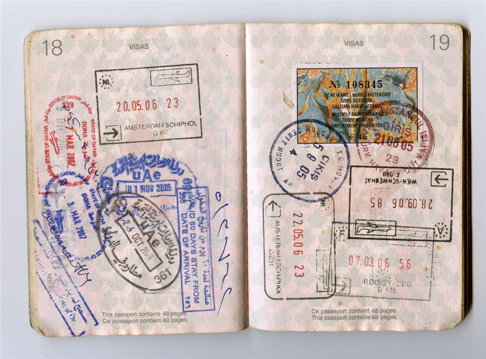

인천화교협회, 영주권 소지 외국인 "10년마다 비자 갱신" 안내
인천화교협회가 영주 자격을 가진 외국인의 체류 관련 갱신 절차를 안내했다. 영주권은 체류 기간에 제한이 없지만, 관련 증명은 주기적으로 갱신해야 한다는 점이 요지다.
유선경 기자 · 2026.09.09
橋화인소식

인천화교협회가 영주 자격을 보유한 외국인을 대상으로 갱신 절차 안내를 게시했다. 영주권 소지자도 관련 증명을 주기적으로 갱신해야 한다는 내용이다.
광고 문의 · 300×250영주 자격은 체류 기간의 제한이 없다는 점에서 다른 체류 자격과 구분된다. 다만 신분을 증명하는 카드 자체는 유효기간이 정해져 있어, 기간이 지나면 갱신 신청을 해야 한다.
갱신을 놓치면 자격이 사라지는 것은 아니지만, 과태료 부과나 각종 행정 절차에서 불편이 생길 수 있다는 점이 안내에서 강조된다. 은행 업무와 부동산 계약, 의료보험 처리에서 유효한 증명이 요구되는 경우가 많다.
한국의 화교 사회에는 영주 자격으로 오래 거주해 온 가구가 많다. 세대가 이어지면서 자격 종류가 가구 내에서 달라지는 경우도 있어, 구성원별 확인이 필요하다는 조언이 나온다.
협회는 서류와 신청 창구에 대한 문의를 받고 있다. 구체적인 제출 서류와 수수료는 출입국·외국인청 안내를 함께 확인하는 것이 정확하다.
협회는 이 밖에도 여권과 인증 관련 수수료 조정 예고 등 생활 행정 안내를 이어 왔다. 공지 내용은 협회 게시판을 통해 확인할 수 있다.
출처·참고 (사실 확인용 — 본문은 직접 재작성)
· http://www.icoca.or.kr/
· http://www.icoca.or.kr/